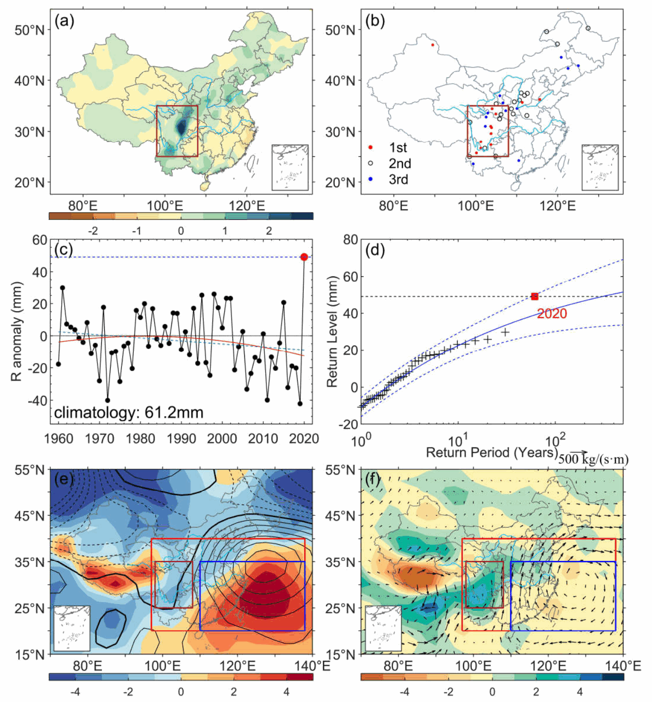
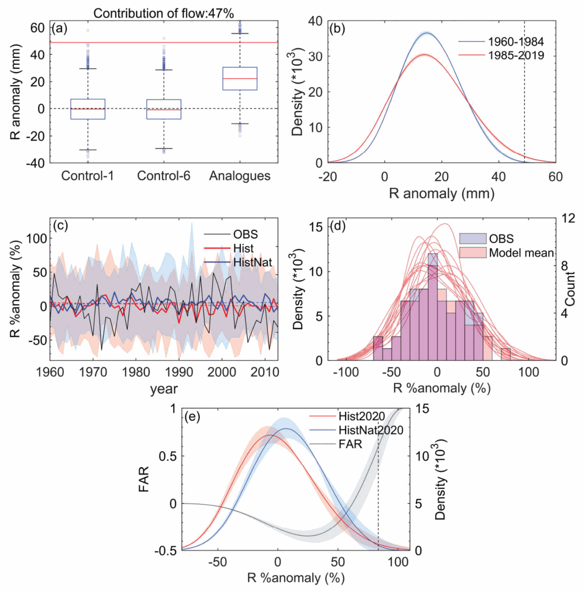

研究专栏｜故事线与概率归因
平均降水没变多，为什么极端暴雨风险却上升了？
简介
这项研究以 2020 年 8 月西南地区破纪录持续暴雨为例，从“这次事件为什么这么强”和“人为活动是否改变了类似事件的风险”两个角度开展归因。结果表明，异常大尺度环流可以解释约 47% 的事件强度，而人为强迫已使达到或超过这次暴雨强度的事件发生概率增至无人为影响时的约 2.4 倍。更值得注意的是，风险上升并不是因为当地平均降水持续增多，而主要与降水变率增大有关，也就是不同年份之间的降水起伏变大了。即使长期趋势并不明显，极端暴雨仍可能变得更容易发生。
背景
2020 年 8 月 11—20 日，四川盆地及周边经历了一次罕见的持续强降水过程，被列入当年全国十大天气气候事件和十大自然灾害。这 10 天的区域降水异常创下 1960 年以来纪录，强度约为 2.5 个标准差。四川盆地多个站点刷新单日降水纪录，其中芦山站达到 425.2 mm，超过此前纪录的两倍。接连不断的暴雨引发洪水、内涝和滑坡等灾害，给当地带来严重损失。
要理解这场暴雨，仅仅知道“下了很多雨”还不够。西南地区受东亚夏季风影响，降水与副热带高压、水汽输送和具体的天气形势密切相关，本身就有很大的自然起伏。以往针对国内强降水的人为归因研究，甚至得到过方向不同的结果。因此，我们想把两个问题分开：这次暴雨有多少可以由异常环流解释？把类似暴雨作为一类事件来看，人为活动又有没有改变它们的发生概率？
方法
对于第一个问题，我们从“故事线”视角出发，追着这次具体事件寻找原因。研究使用环流相似方法，从历史资料中找出与 2020 年大尺度天气形势相似的日子，再用那些日子的降水重建这次事件。我们还设置了随机抽取天气形势的对照，并考虑同一种环流可能连续维持几天，避免把持续性的影响漏掉。
第二个问题则需要换个角度。只比较过去和现在，能看出气候背景变化的影响，却还不能把人为贡献单独分出来。于是，我们使用英国气象局的 HadGEM3-GA6-N216 归因系统，比较 2020 年有、无人为强迫的两组模拟，每组各有 525 个成员。可以把它理解成：在包含人类活动影响的世界，以及去掉人为影响的假想世界里，各模拟许多种可能的天气，再比较达到同一暴雨强度的机会。这就是这里采用的概率归因思路。
结果
先看这次事件的天气形势，研究区域位于青藏高原东缘，也处在异常强盛且持续的西太平洋副热带高压西侧。来自南方的水汽不断输送到四川盆地及周边，并在这里汇聚，为持续暴雨准备了充足的水汽和有利的环流条件。

环流相似分析也印证了这套天气形势的重要性。如果完全随机抽取历史天气形势，重建样本中几乎不会出现达到 2020 年强度的降水；换成与当年相似的环流，降水会明显增强。但即便如此，2020 年的实际强度在这些样本里仍然十分罕见。
进一步考虑环流持续性后，大尺度环流能解释实际事件强度的约 47.2%。也就是说，异常环流确实是暴雨形成的重要原因，但只解释了大约一半。仅仅说“当年的天气形势特别异常”，还不足以解释它为什么这么强。当然，剩下的部分也不能直接全部算作人为影响，环流相似方法没有单独计算的土壤湿度等因素同样可能参与其中。
在相似环流下比较不同时期，还能看到气候背景变化留下的信号：较近期的相似环流更容易对应较大的降水异常。不过，要回答其中有多少与人为活动有关，还得看有、无人为强迫的模拟比较。
两组模拟给出的结果是，人为强迫使达到或超过 2020 年事件强度的概率增至约 2.4 倍，对应的可归因风险比例（FAR）约为 0.59。这里的 2.4 倍，是与没有人为强迫的模拟相比，针对这一地区、这一时段和强度门槛的概率比（PR）。它衡量的是类似暴雨发生的机会，并不是说这场暴雨的雨量增加了 2.4 倍，也不能与前面的环流贡献比例直接相加。

讨论
图 2 中还有一个容易被忽略的结果：既然人为强迫增加了暴雨风险，是不是意味着这个地区一直在变湿？实际并非如此。1960 年以来，研究区域每年 8 月 11—20 日的平均降水甚至略有下降，只是趋势并不显著；模式中的人为强迫响应也倾向于降低区域平均降水。
为什么平均降水没变多，极端暴雨却更容易出现？关键在于降水的起伏变大了。模式结果显示，人为强迫增加了区域降水的年际变率，使概率分布变宽。即使平均值没有向“更湿”的方向移动，强降水那一端仍可能伸得更远，让过去很少出现的暴雨变得更常见。换句话说，平均降水没有明显增加，并不代表极端暴雨风险没有上升。
这也是降水归因比较有意思的地方。对于高温，平均气温升高与极端增强通常方向一致，容易理解；降水却不一定如此。一个地区没有明显的长期增湿趋势，仍可能因为年份之间的起伏加大而面临更高的极端风险。如果只盯着一条长期趋势线，就容易漏掉这些藏在分布尾部的变化。
从方法上看，这篇工作也接续了前一篇关于 2020 年梅雨与华南高温的研究。那篇工作在相似环流条件下比较过去和当前气候，这次则进一步引入有、无人为强迫的模拟。一边追问“为什么这一次会发生”，一边追问“人为活动改变了多少类似事件的风险”，两个视角回答不同的问题，也相互补充。
因此，评估极端降水风险时，除了问“未来平均会不会下更多雨”，还需要问：不同年份之间的起伏会不会更大？过去少见的强降水会不会更容易发生？异常环流帮助解释这场暴雨为何在特定时间和地点出现，气候变化则可能通过改变降水的起伏，放大类似事件的风险。很多变化并不直接写在平均值上。
背后的故事
这篇文章是从我研究生入学第二年的春夏季开始做的。虽然篇幅很短，工作量却一点也不小。那段时间课程很满，白天、晚上基本都在上课，回到宿舍还得接着写代码、做分析，压力确实很大。好在最后还是顺利完成了所有代码分析和绘图工作。